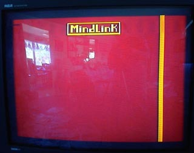

mindLiNK PRotOtYpE, UsE YOur mind tO conTRoL gAmeS.
DESCRIPTION:
*Atari mindlink is an innovative system that enables you to
control your Atari game system or computer without moving,
semmingly by magic. It relies upon special software
designed to interact with every individuals unique EMG
readings. It encourages you to concentrate and relax,
and is both fun and challenging to master.